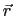
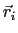
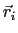

Next: Surf
Up: Rendering methods
Previous: Twister
Contents
Index
QuickSurf
The `QuickSurf' representation computes an isosurface extracted from a
volumetric Gaussian density map computed from atoms or particles in the
neighborhood of each
lattice point [24,25,26,27,31,28,29].
The density map generation algorithm accumulates Gaussian densities on a
uniformly-spaced 3-D lattice defined within a bounding box
large enough to contain all of the atoms or particles that are selected
as part of the rendered surface; sufficient padding at the edges
of the volume ensures that the extracted surface is not clipped off.
The density map generation algorithm satisfies
where the density
is evaluated at a position 
by summing
over all  atoms. Each atom
atoms. Each atom  is located at position 
and
has an associated weighting factor
is located at position 
and
has an associated weighting factor  which is determined by
multiplying its radius with user-defined weighting and scaling factors
that customize the visualization to produce a surface with an
appropriate user-defined level of detail.
which is determined by
multiplying its radius with user-defined weighting and scaling factors
that customize the visualization to produce a surface with an
appropriate user-defined level of detail.
The QuickSurf representation includes several controls which modify
the parameters of Eq. 6.1 to produce a surface that
meets the required spatial fidelity and interactive rendering performance.
- Resolution - An overall spatial resolution approximation slider, which
automatically sets the values of the detailed parameters below
- Radius Scale - A radius scaling factor applied to all atoms prior to
computing their density map contributions
- Density Isovalue - The density isovalue to use when extracting the
generated isosurface
- Grid Spacing - The density map uniform lattice spacing parameter.
- Surface Quality - The maximum cutoff distance to use when gathering
Gaussian density contributions from atoms or particles in the
neighborhood of each lattice point
Several factors influence the interactive calculation and display
performance of the QuickSurf representation. The CPU version of the
QuickSurf algorithm is multithreaded, but due to the potential for
significant memory usage associated with CPU core, the number of CPU
cores used by the algorithm may be clamped to a maximum of eight,
and for density map volumes approaching 1GB in size, or larger,
the algorithm may reduce the number of CPU cores used to four or less
to prevent out-of-memory conditions from occuring at runtime.
On machines equipped with appropriate GPU hardware, the QuickSurf
representation will use a GPU-accelerated implementation that runs
one to two orders of magnitude faster than the CPU version. The speed
of the GPU algorithm is somewhat dependent on the memory capacity
of the target GPUs, since density maps larger than the capacity of the
GPU must be computed in multiple passes.
Next: Surf
Up: Rendering methods
Previous: Twister
Contents
Index
vmd@ks.uiuc.edu